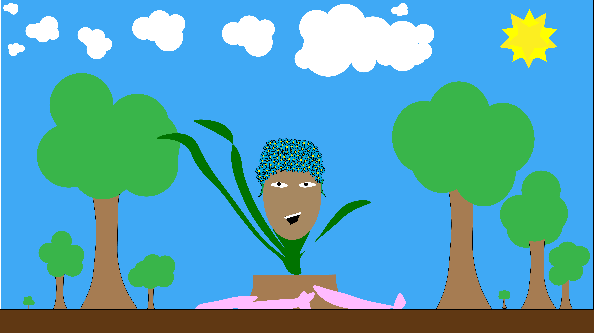

This project takes the idea of being inspired for a self portrait, and applies it to the growth of a flower. I strived to liken the idea of self to the blooming of a flower in spring. I used Illustrator to make all of the elements used, and animated all of them in adobe after effects.
